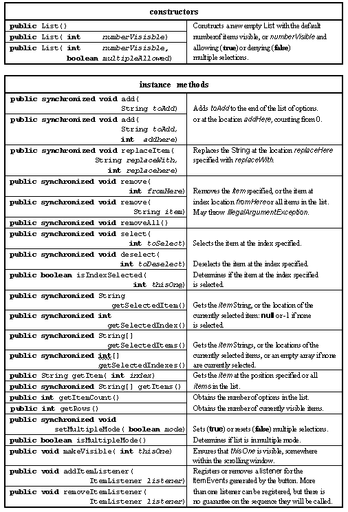
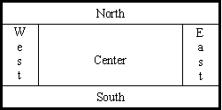
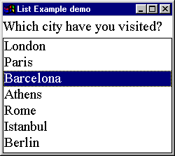
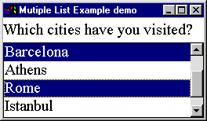

The List class provides a, possibly scrolling, list box which allows the user to select one option, or a number of options, from a list of choices. The major resources of this class are given in Table 2.15.

Table 2.15 Major resources of the List class.
An instance of the List class encapsulates a list of Strings, known as items, which represent the choices to be presented to the user. It also knows if it is available for single or multiple selections and the number of items in the list (rows) which are to be visible. If the number of rows is greater than the number of items in the list then the List will automatically supply a vertical Scrollbar to navigate the list.
The third constructor requires the number of rows to be specified and a boolean value to indicate if multiple selections are to be allowed. The two add() methods allow a single item to be added to the end of the list or to be added at a specific location within the list. The two remove() methods allow a single item or a continuous range of items to be deleted and removeAll() clears the list. The getItemCount() method indicates the number of items in the list.
The two methods, setMultipleMode() and isMultipleMode(), allow the multiple selection state of the list to be set or queried. The select() and deSelect() methods are supplied to allow items within the list to be selected and the isSelected() boolean enquiry method will indicate the state of an individual item.
The getRows() and getVisibleIndex() methods indicate the number of visible items and the first item which is visible. The makeVisible() method makes sure that the specified item is visible somewhere within the list's window.
The getSelectedIndex() should only be used if the List is in single selection mode and returns the index of the currently selected item or -1 if none are selected. If the list is in multiple selection mode the getSelectedIndexes() method will return an array of the indexes of the currently selected items. This will be empty ( i.e. its length attribute will be 0) if none are selected. The getSelectedItem() and getSelectedItems() methods return a String or an array of Strings in a similar manner.
The following init() method, from a class called SingleListExample, creates a List instance and adds seven items naming European capital cities, accompanied by a Label providing a prompt for the choices.
0014 public class SingleListExample extends Applet
0015 implements ItemListener {
0016
0017
0018 public void init() {
0019
0020 List cityList;
0021 Label promptLabel;
0022
0023 this.setLayout( new BorderLayout());
0024
0025 cityList = new List( 7, false);
0026 cityList.addItemListener( this);
0027
0028 cityList.addItem( "London");
0029 cityList.addItem( "Paris");
0030 cityList.addItem( "Barcelona");
0031 cityList.addItem( "Athens");
0032 cityList.addItem( "Rome");
0033 cityList.addItem( "Istanbul");
0034 cityList.addItem( "Berlin");
0035
0036 promptLabel = new Label( "Which city have you visited?");
0037
0038 this.add( promptLabel, "North");
0039 this.add( cityList, "Center");
0040 } // End init.
A BorderLayout manager is required for this example as a GridLayout allocates identical amounts of space for all of its children and this would not be appropriate for this interface. A Container with a BorderLayout policy has a maximum of five children which can be placed into its "North", "South", "East", "West" and "Center" locations as shown in Figure 2.8. Unlike the GridLayout and FlowLayout mangers, which have been used so far, the manager does not force all the children to be the same size. The location of a child within a BorderLayout policy is specified by a second String argument to the Container's add() method, as shown on lines 0038 and 0039.

Figure 2.8. BorderLayout policy management
The appearance of the ListExample is shown in Figure 2.9.

Figure 2.9 List instance in single selection mode without a Scrollbar.
The start of the itemStateChanged() method for this class is as follows. It differs from the previous versions by explicitly retrieving the identity of the ItemSelectable component from the ListEvent and, using a cast, storing it in the local variable theList. This allows the List getSelectedIndex() and getSelectedItem() methods to be demonstrated on lines 0051 and 0052. The remainder of the method is as in the previous examples.
0043 public void itemStateChanged( ItemEvent event) {
0044
0045 List theList = (List) event.getItemSelectable();
0046
0047 if ( theList == cityList) {
0048 System.out.println( "Item Selectable is cityList.");
0049 } // End if.
0050
0051 System.out.println( "Item index is " + theList.getSelectedIndex());
0052 System.out.println( "Item string is " + theList.getSelectedItem());
---- // Remainder as before!
The output produced by this method when "Barcelona" was selected is as follows.
Item Selectable is cityList. Item index is 2 Item string is Barcelona State Change is Selected ID is ITEM_STATE_CHANGED.
A small change to the init() method, in a class called MutipleListExample, will demonstrate the appearance of a List when a ScrollBar is required and when multiple selections are allowed. Both changes can be effected on line 0025 as follows. The appearance of this example is shown in Figure 2.10.
0025 cityList = new List( 4, true);

Figure 2.10 List instance in multiple selection mode with a Scrollbar.
Figure 2.10 shows that only four of the seven items on the list are visible, the non-visible items can be made visible by using the scroll bar at the right of the list. It also shows, by the selection of "Barcelona" and "Rome" that multiple selection is allowed. The itemStateChanged() method for this class is as follows and outputs a list of all the items which are selected every time an item is selected or deselected.
0043 public void itemStateChanged( ItemEvent event) {
0044
0045 List theList = (List) event.getItemSelectable();
0046 String visited[] = theList.getSelectedItems();
0047
0048 if ( visited.length == 0) {
0049 System.out.println( "No items are now selected!");
0050 } else {
0051 for ( int index = 0; index < visited.length; index++) {
0052 System.out.print( visited[ index] + " ");
0053 } // End for.
0054 System.out.println();
0055 } // End if.
0056 } // End itemStateChanged.
On line 0045 the identity of the List is retrieved, as before, and on line 0046 the array of Strings containing the selected items is obtained using its getSelectedItems() method. If the list is empty a message stating this is output on line 0049, otherwise, on lines 0051 to 0055, a for loop outputs all the items in the list . The output produced by this method when the cities "Barcelona", "Istanbul" and "Athens" were first selected and then deselected, is as follows.
Barcelona Barcelona Istanbul Barcelona Athens Istanbul Barcelona Istanbul Barcelona No items are now selected!
Design Advice
Use a list box instead of an option menu when there are multiple items which have to be selected, or when there is a large number of items to be selected from or when the number of items in the list might change.